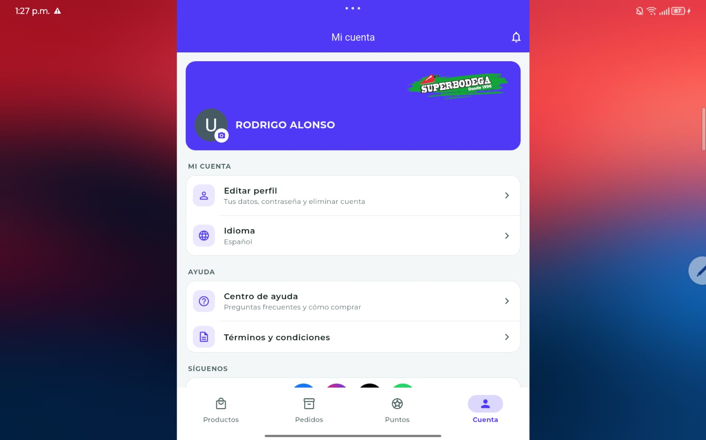
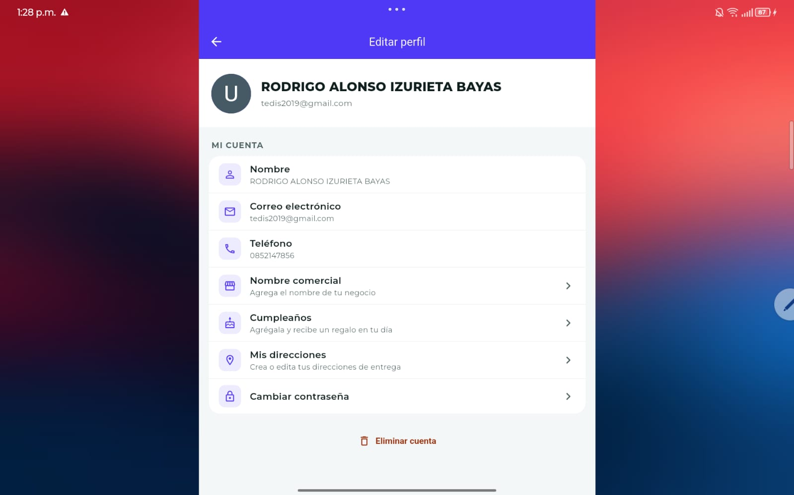
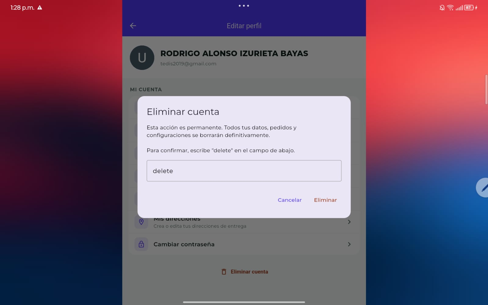

Aplicación: Superbodega
Desarrollador: Quipu Ecuador
Puedes eliminar tu cuenta de Superbodega en cualquier momento, desde la propia aplicación o escribiéndonos si ya no la tienes instalada.
Opción 1: Eliminar tu cuenta desde la aplicación
- Abre la app Superbodega e inicia sesión.
- Ve a la sección Cuenta.
- Entra en la opción de perfil («Tus datos, contraseña y eliminar cuenta»).
- Pulsa Eliminar cuenta.
- Lee la advertencia y escribe la palabra delete en el campo de confirmación.
- Confirma. Tu sesión se cerrará y la cuenta quedará eliminada.



Opción 2: Solicitar la eliminación sin usar la aplicación
Si ya no tienes la app instalada o no puedes acceder a tu cuenta, escribe a quipu.ecuador2022@gmail.com con el asunto «Eliminar cuenta Superbodega» e indica:
- Nombre completo
- Correo electrónico o número de teléfono con el que te registraste
Atenderemos tu solicitud en un plazo máximo de 7 días hábiles y te confirmaremos por el mismo medio.
Datos que se eliminan
- Datos de perfil: nombre, correo electrónico, teléfono, nombre comercial y cumpleaños
- Direcciones de entrega guardadas
- Credenciales de acceso
- Configuraciones y preferencias de la cuenta
Datos que se conservan
- Comprobantes de venta y registros de facturación, que se conservan durante 3 meses por obligación legal y tributaria.
Importante
La eliminación es permanente e irreversible. Si quieres volver a usar Superbodega, tendrás que crear una cuenta nueva.
Contacto
quipu.ecuador2022@gmail.com · +593998547734